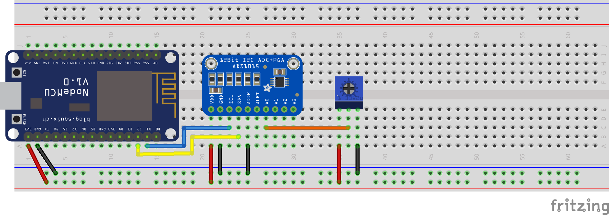
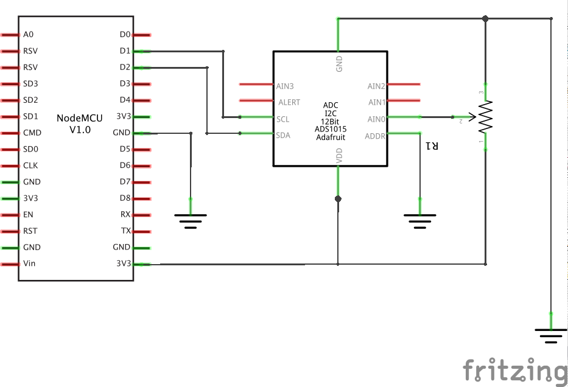

Exercise: NodeMCU I2C ADC
Objective
Use analog sensors with the NodeMCU by reading an analog voltage using the NodeMCU and the
Adafruit ADS1015 I2C ADC.
The NodeMCU is great, but it is sorely lacking in analog inputs. Luckily, there are many
I/O expanders that communicate over I2C, and one of them is the Adafruit ADS1015. This is
breakout board that provides 4 analog inputs that have 12-bit resolution (this is more accurate
than the Arduino's 10-bit resolution). Also important to note: the ADS1015 is both 3.3V and 5V
tolerant (so we can run it from the 3.3V NodeMCU).
However, the downside to I2C is speed, so you will not be able to poll the ADS1015 as fast
as you would the one analog input pin on the NodeMCU.
There are some other features of the ADS1015 that might be a bit tricky at first. Most importantly,
you can set the gain of the ADC (aka you are not forced to use your 12 bits of resolution between
Gnd and Vdd). In theory, and with the default settings the ADS1015 will map voltages from -6.144V to +6.144V to the range
-2048 to +2047 (not +2048). This means 0V will yield 0, 3.3V will yeild 1100, and -3.3V will yeild
-1100. However, in reality you can only give the analog inputs a voltage between Gnd and Vcc, which for the NodeMCU is 3.3V. That means that
if you keep the default settings and are powering your ADS1015 with 3.3V,
you will only get back a value between 0 and 1100 (a 3mV per bit resolution); this effectively limits the resolution of our analog-to-digital converter.
To improve this, we can adjust the gain so that the ADS1015 uses another range.
For example, if we knew that our analog signal would always be less than 1V, we could
use the -1.024V to 1.024V range. This would give us a 0.5mV per bit resolution. However, just like if we
put a voltage below Gnd or above Vdd on an analog pin, putting a voltage outside the sampling range
on the input can damage or destroy the chip. NOTE: You can damage your NodeMCU by putting voltages higher than 3.3V into any of the pins, and you can damage your ADS1015 by subjecting it to voltages higher than the range you have established.
Steps and observations
- First we need to install Adafruit's library which can be found
here. Download the zip of the
library from github (the green "clone or download" button on the right above the file list).
- To install the library, go to Sketch->Include Library->Add .ZIP Library... Add the zip you downloaded
from the previous step and you should be all set.
- Build the circuit below.
- Open the "singleended" example under File->Examples->Adafruit ADS1X15->singleended.
- Make sure your board and port are set correclty under the tool menu and upload your code
to your NodeMCU. You may have to press the "RST" button on the NodeMCU to get the new code running.
- Watch the output on the serial monitor as you change the potentiometer. AIN0 should be changing.
If it isn't, double check your circuit.
- Uncomment the line that in the setup function that says: "ads.setGain(GAIN_ONE);". This will
change the scalling so that each bit is 2mV, not 3mV.
- Re-upload the code and check out how the range of values you get from your potentiometer is
larger.
Comments
- If you are still a bit fuzzy on the mV per bit thing, read this paragraph: Sometimes we want to
go from the output of an ADC to a real voltage in our circuit. To do this, we need to know
how much voltage change corresponds to each increase of 1 in the output of the ADC. For example,
what is the difference in voltage between an output of 1025 and 1026? To figure this out, we can
look in the example code we will be using below and check out the table in the comments of the
setup function. For the default range of +/- 6.144V, we see 1 bit = 3mV. This means that we can
take the output of the ADC and multiply it by 0.003V to get the actual voltage on the input pin.
So, 1101 as output would mean the analog input has a voltage of 3.303V.
- If you want to use this chip to measure the difference in voltage between two analog inputs or
have any more questions about this breakout, check out Adafruit's awesome write up that links to the schematic and the datasheet of the ADS1015 chip.


Other Files
- NodeMCU-I2C-ADC.fzz